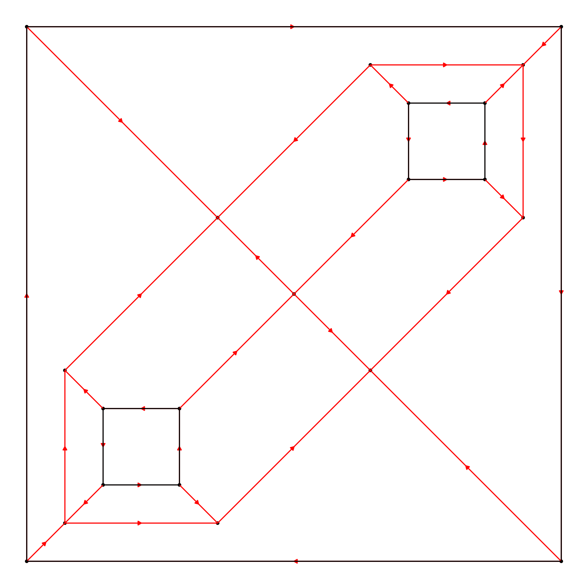
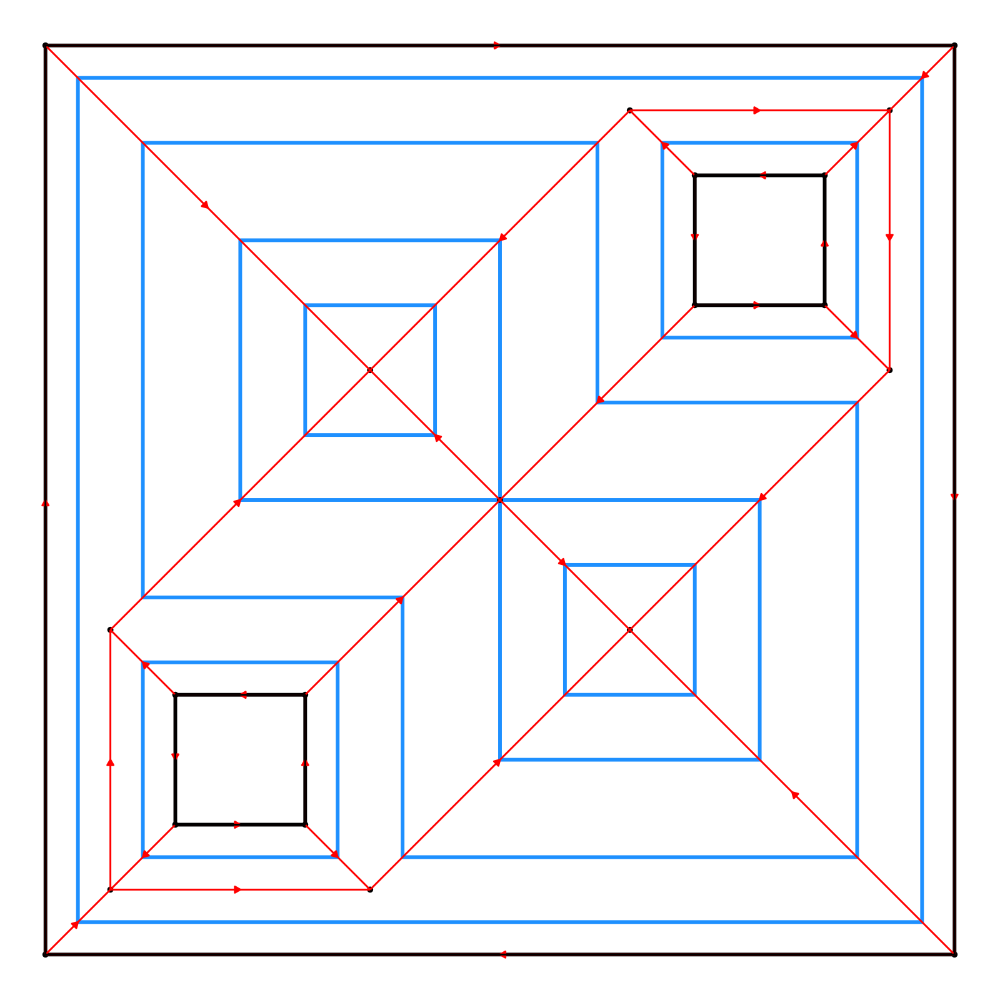
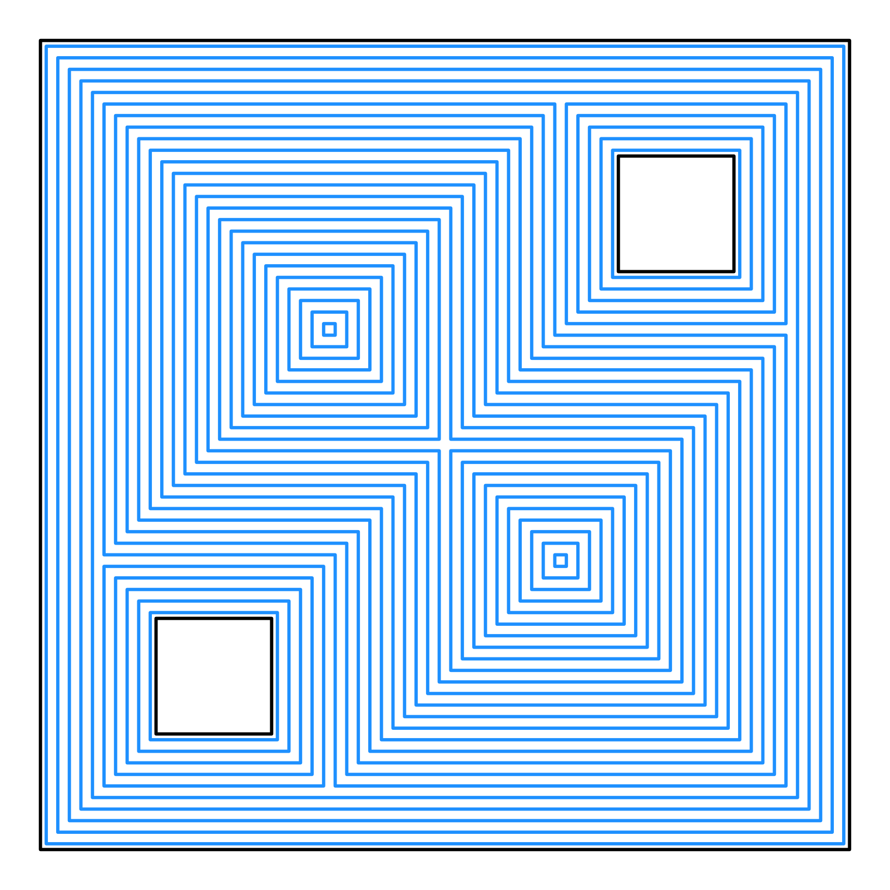
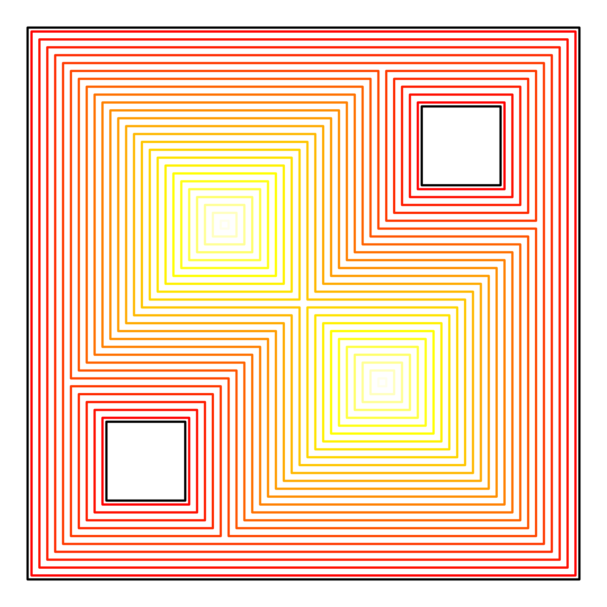
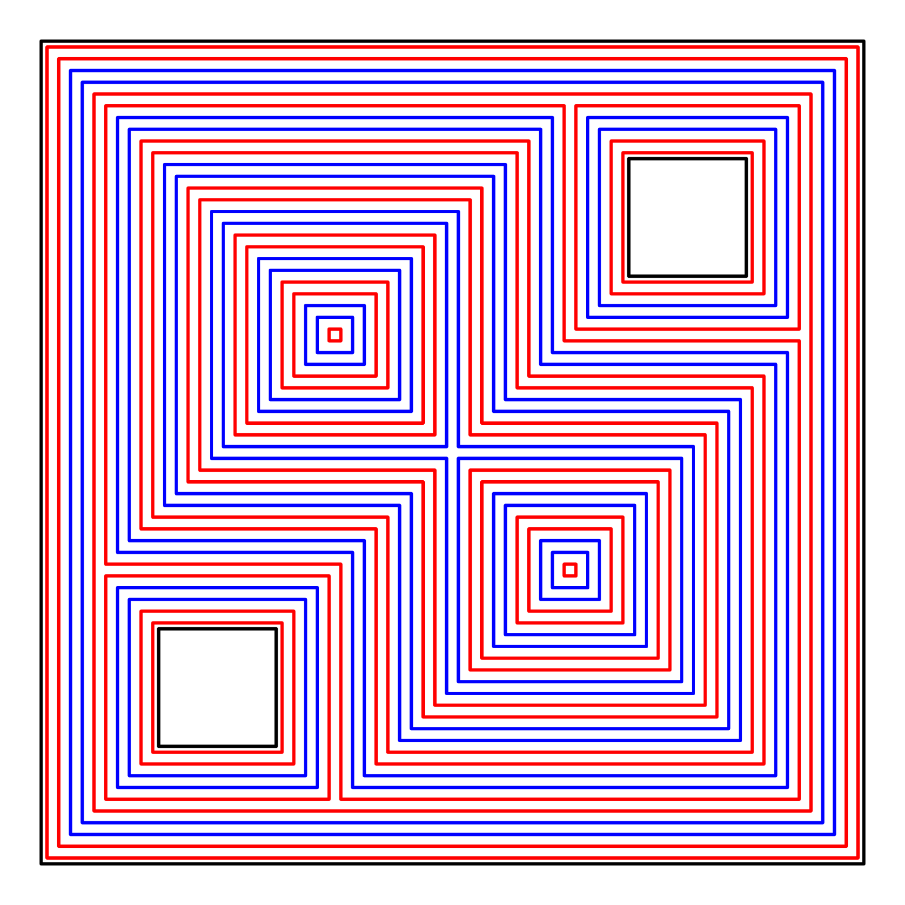
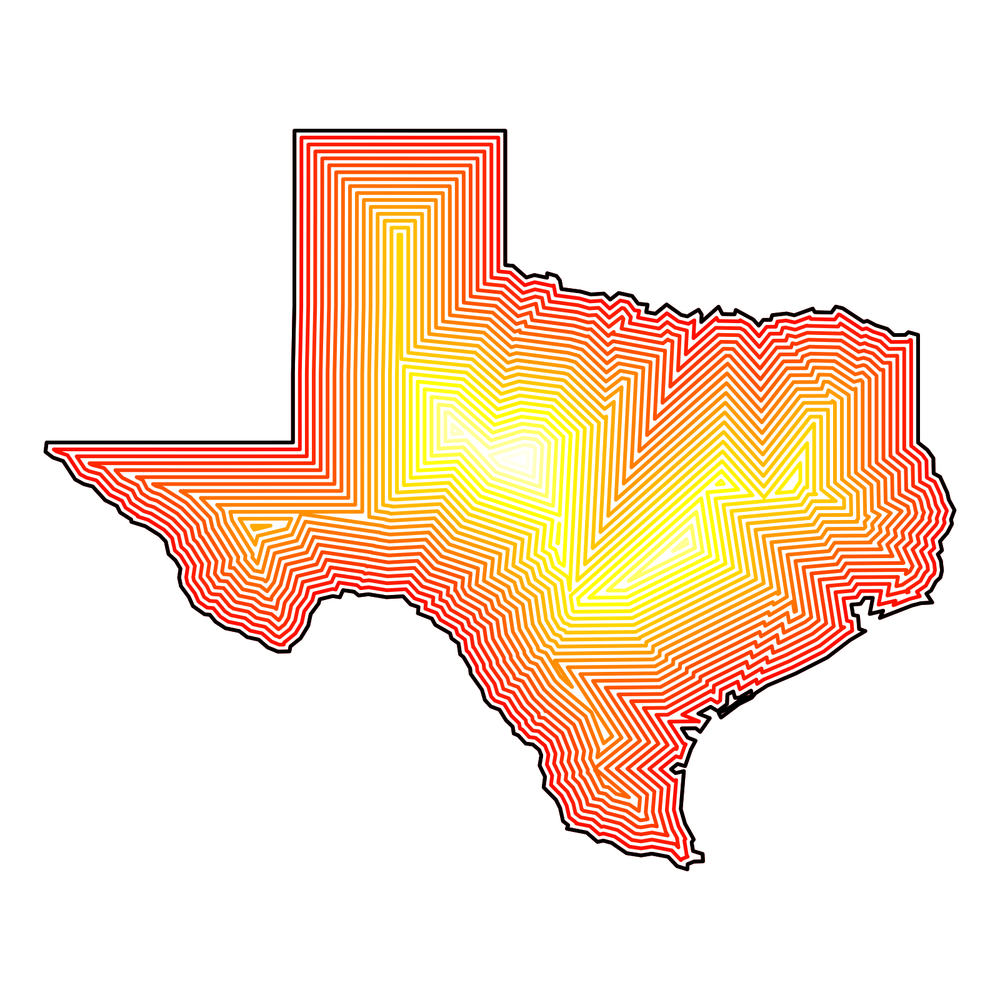

Plot the offset polygons generated by the `generate_offset_polygon` function.
Usage
plot_offset_polygon(
offset_polygons,
plot_original_polygon = TRUE,
fill = NA,
color = "dodgerblue",
xlim = NULL,
ylim = NULL,
linewidth = 1,
background = "white",
plot_skeleton = FALSE,
return_layers = FALSE,
...
)Arguments
- offset_polygons
Default `NULL`. A `rayskeleton_polygon` or `rayskeleton_polygon_list` object, generated from `generate_offset_polygon()`.
- plot_original_polygon
Default `TRUE`. Whether to plot the original polygon.
- fill
Default `NULL`. A color or palette function to generate the fill palette for the polygons' interiors.
- color
Default `grDevices::heat.colors`. A color or palette function to generate the color palette for the offset polygons' borders.
- xlim
Default `NULL`. The x-axis limits as a vector of two values (min, max). If `NULL`, it calculates the limits from the data.
- ylim
Default `NULL`. The y-axis limits as a vector of two values (min, max). If `NULL`, it calculates the limits from the data.
- linewidth
Default `1`. The linewidth of the polygon.
- background
Default `"white"`. Background color.
- plot_skeleton
Default `FALSE`. Whether to plot the straight skeleton.
- return_layers
Default `FALSE`, plots the figure. If `TRUE`, this will instead return a list of the ggplot layers.
- ...
Additional arguments to pass to `plot_skeleton()` if `plot_skeleton = TRUE`
Examples
# Outer polygon
vertices = matrix(c(0,0, 7,0, 7,7, 0,7, 0,0), ncol = 2, byrow = TRUE)
# Holes inside the polygon
hole_1 = matrix(c(1,1, 2,1, 2,2, 1,2, 1,1), ncol = 2, byrow = TRUE)[5:1,]
hole_2 = matrix(c(5,5, 6,5, 6,6, 5,6, 5,5), ncol = 2, byrow = TRUE)[5:1,]
skeleton = skeletonize(vertices, holes = list(hole_1, hole_2))
plot_skeleton(skeleton)

#Generate three offsets with the skeleton
plot_offset_polygon(generate_offset_polygon(skeleton, c(0.25,0.75,1.5,2)), plot_skeleton = TRUE)

#Generate many offsets
plot_offset_polygon(generate_offset_polygon(skeleton, seq(0.05,2.55,by=0.1)))

#Pass a palette
plot_offset_polygon(generate_offset_polygon(skeleton, seq(0.05,2.55,by=0.1)),
color = heat.colors)

#Pass colors manually (colors in excess of the number of offsets are ignored)
plot_offset_polygon(generate_offset_polygon(skeleton, seq(0.05,2.55,by=0.1)),
color = rep(c("red","red","blue","blue"),100))

# Skeletonize and plot an {sf} object
if(length(find.package("spData",quiet = TRUE)) > 0) {
us_states = spData::us_states
texas = us_states[us_states$NAME == "Texas",]
texas_skeleton = skeletonize(texas)
plot_offset_polygon(generate_offset_polygon(texas_skeleton, seq(0, 2.5, by = 0.1)),
color = heat.colors,
linewidth = 1)
}
